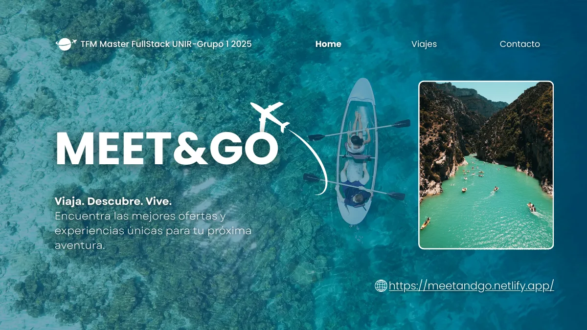

Proyecto final del Máster · Full stack
Una plataforma web para crear, compartir y gestionar viajes en grupo. Un proyecto en equipo, desarrollado de principio a fin y desplegado en un entorno real.
Viajar en grupo sigue siendo complejo por la falta de una plataforma única que conecte a personas con intereses comunes y centralice la planificación, la gestión de participantes, la comunicación y los gastos compartidos. Nuestra oportunidad: unir viajes y economía colaborativa en un solo lugar, basado en la confianza y la transparencia.
El usuario crea un viaje (destino, fechas, plazas, coste estimado, transporte y alojamiento), se publica en un listado con búsqueda por destino, fechas o ciudad de salida, y otros usuarios pueden solicitar unirse. El creador acepta o rechaza solicitudes, así que controla quién forma parte del grupo.
La app envía emails para verificar el registro y avisar de cambios de fecha o solicitudes. Cada viaje tiene un foro interno, solo accesible para sus miembros, donde publicar mensajes y responder.
Trabajé en el frontend con otros dos compañeros: una interfaz clara y minimalista, navegación intuitiva y diseño responsive pensado para móvil y escritorio, inspirado en apps modernas de viajes y redes sociales.
Frontend en Angular desplegado en Netlify, backend en Node.js con Express desplegado en Render y base de datos MySQL en Aiven. Frontend y backend viven en repositorios de GitHub separados.
Nos repartimos por áreas (backend, frontend y base de datos) con reuniones semanales de todo el grupo y de cada subgrupo. Usamos Trello para repartir tareas cada semana, WhatsApp y el foro de la UNIR para comunicarnos, y actas de cada reunión en un documento compartido; las reuniones se grababan para quien no podía asistir.
Las líneas futuras son un match de viajeros por afinidad (edad, intereses, presupuesto), favoritos y recomendaciones personalizadas, integración con APIs externas (mapas y pagos) y mejoras de rendimiento con cacheo y un backend más modular.
